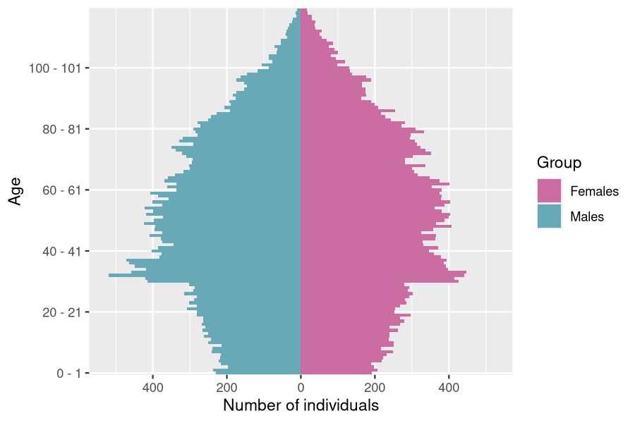
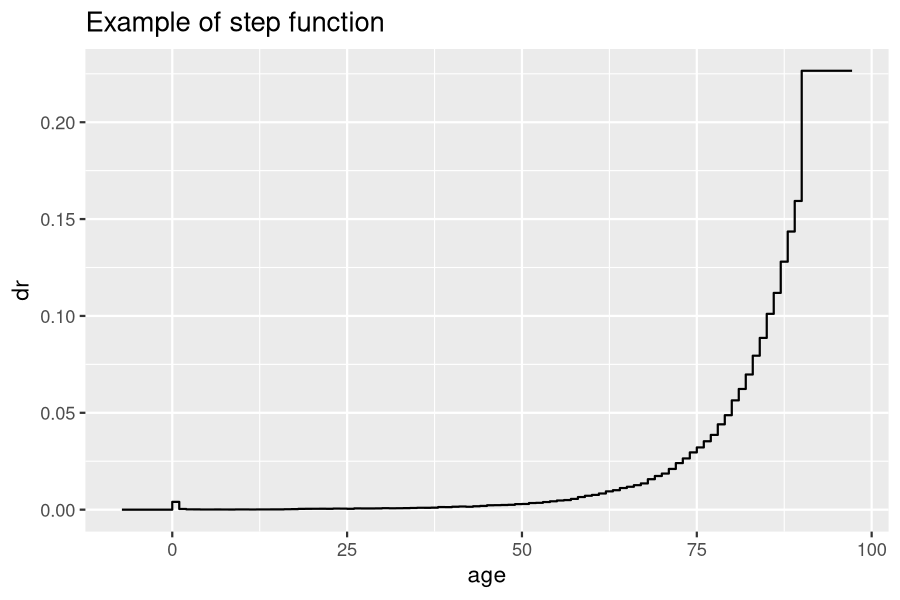
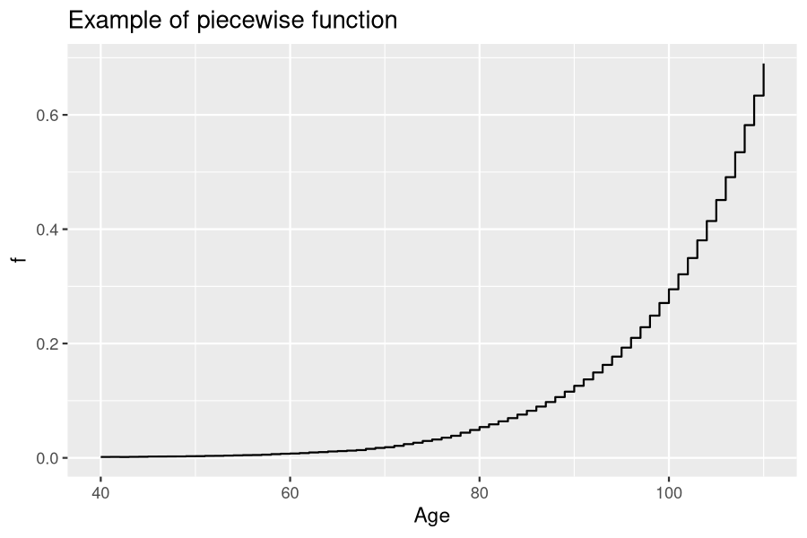

vignettes/IBMPopSim.Rmd
IBMPopSim.RmdThe IBMPopSim package is conceived to simulate the random evolution of structured population dynamics, called stochastic Individual Based Models (IBMs), based on the description of individual behaviors.
The package IBMPopSim allows the efficient simulation of a wide class IBMs where individuals are marked by their date of birth and a set of (discrete or continuous) characteristics. The scope of applications includes population models in actuarial science, biology, demography, ecology, epidemiology or economy.
An IBM is summarized by the different types events occurring in the population at random dates. These events include the birth/arrival or death/exit of an individual in the population, and individuals changing of characteristics. Once the events modifying the population have been defined, the last step before simulating the population evolution is to specify the so-called events intensities, describing the frequency at which the different types of events occur in the population.
Stochastic IBMs can be defined as a general class of population dynamics models, where different types of events can occur to individuals at random dates, depending on their age (or equivalently their date of birth) and characteristics (gender, location, size, socioeconomic class…), and interactions with others.
An IBM can be summarized by the different types events that can occur to individuals and modify the population composition, and how frequently they happen. Let us start by recalling briefly these features before going into detailed on how they can be defined in IBMPopSim.
In IBMPopSim, the population can evolve according to six main types of events:
With each event type is associated an event kernel, describing how the population is modified following the occurrence of the event. For instance, if an individual \(I\) dies or exit a time \(t\), the individual is removed from the population.
For other types of events, the event kernel has to be specified. Indeed, if an new individual enters the population (entry event), the rule for choosing the age and characteristics of this new individual has to be defined. For instance, the characteristics of a new individual in the population can be chosen uniformly in the space of all characteristics, or can depends on the distribution of his parents or those of the other individuals composing the population.
Once the different types or events and their action have been defined, it remains to define how frequently they can occur to define properly an IBM.
An event intensity is a function \(\lambda^e(I,t)\) describing the frequency at which an event \(e\) can occur to an individual \(I\) in the population at a time \(t\). Informally, given an history of the population \((\mathcal{F}_t)\), the probability of event \(e\) occurring to individual \(I\) during a small interval of time \((t,t+dt]\) is proportional to \(\lambda^e(I,t)\): \[\begin{equation} \mathbb{P}(\text{event } e \text{ occurring to $I$ during } (t,t+dt] | \mathcal{F}_t) = \lambda^e(I,t)dt. \end{equation}\]
The intensity function \(\lambda^e\) can depend on:
When the intensity \(\lambda^e\) does not depends on the other individuals living in the population (there are no interactions for this specific event), the intensity function is said to be in the class of individual intensity functions. This is case for instance when the death intensity of individuals only depend on their age and characteristics. Otherwise, the intensity function is said to be the class of interaction functions. In this package, we mainly focus on quadratic interactions, that is of intensity functions of the form
\[\begin{equation} \lambda^e(I,t) = \sum_{J \in pop} U(I,J,t). \tag{1.1} \end{equation}\]
The interaction function \(U(I,J,t)\) represent the interaction between two individuals \(I\) and \(J\) at time \(t\). See for instance the vignette('IBMPopSim_interaction') for examples of intensities with interactions.
Sometimes, the intensity refers to the frequency at which an event can occur in all the population. This is the case for instance when individuals enter the population at a constant rate \(C^e\) (intensity of class poisson), or at a rate \((\Lambda^e_t)\) depending on time (intensity of class inhomogeneous_poisson). In this case, the intensity \(\Lambda^e_t\) is informally defined as
\[\begin{equation} \mathbb{P}(\text{event } e \text{ occurring in the population during } (t,t+dt] | \mathcal{F}_t) = \Lambda^e_t dt. \end{equation}\]
The IBM simulation algorithm is based on an acceptance-rejection method for simulating random times called thinning, generalizing the algorithm proposed by (Fournier and Méléard 2004) (see also (Ferrière and Tran 2009), (Boumezoued 2016)). The main idea of the algorithm is to use candidate event times with constant intensity \(\bar \lambda\) (which corresponds to exponential variables with parameter \(\bar \lambda\)). The constant \(\bar \lambda\) must be greater than the true event intensity \(\lambda^e(I,t)\) for all individuals \(I\):
\[\begin{equation} \lambda^e(I,t) \leq \bar{\lambda}, \quad \forall I \in \text{pop}, \; t \in [0,T]. \end{equation}\]
Starting from time \(t\), once a candidate event time \(t + \tau^e\) has been proposed for a given event \(e\) and individual \(I\), it remains to accept or reject the candidate event with probability \(\frac{\lambda^e(I,t+\tau^e)}{\bar{\lambda}}\). If the candidate event time is accepted, then the event \(e\) occurs to the individual \(I\) at time \(t + \tau^e\). The main idea of the algorithm implemented can be summarized as follows:
Thinning algorithm
In the presence of interactions, the intensity of an individual \(I\) is computed making the sum over all individuals \(J\) in the population of the interactions between \(I\) and \(J\), which can be very time consuming. We introduce in IBMPopSim a “randomized” algorithm, in which this computation is by picking randomly another individual in the population and computing its interaction function with the given individual. In this case the algorithm presented above is simply modified as follows: two individuals are picked, the intensity function \(\lambda^e\) in the algorithm is replaced by the interaction function \(U^e\), and \(\bar \lambda\) by a bound of \(U^e\).
Emphasis is placed on code efficiency (speed of execution) and ease of implementation, while trying to be as general as possible.
The implementation of an IBM model is based on a few building blocks, easy to manipulate. For code efficiency, we have chosen to let the user write a few lines of C++ code in R interface to define events intensity and action kernel. The user’s code is concatenated with internal code in the package. Compilation is done via the sourceCpp call of the Rcpp package. The code produced is usually very fast and can be multithreaded.
Thanks to model parameters and predefined functions, the C++ code to be written is simple and does not require a great knowledge of C++: it is enough to respect the rules of syntax, to do arithmetic operations and tests. Furthermore, various inputs of the model can be modified without having to recompile the code.
The latest stable version can be installed from CRAN:
install.packages('IBMPopSim')The latest development version can be installed from github:
# install.packages("devtools")
devtools::install_github('DaphneGiorgi/IBMPopSim')To illustrate the use of the package and to check the installation, a simple model with Poisson arrivals and exits is implemented.
library(IBMPopSim)
init_size <- 100000
pop <- data.frame(birth = rep(0, init_size), death = NA)
birth = mk_event_poisson(type = 'birth', intensity = 'lambda')
death = mk_event_poisson(type = 'death', intensity = 'mu')
params = list('lambda' = 100, 'mu' = 100)
# mk_model compiles C++ code using sourceCpp from Rcpp
birth_death <- mk_model(events = list(birth, death),
parameters = params)If there are no errors then the C++ built environment is compatible with the package. The model is created and a C++ code has been compiled. The simulation is done using the popsim function.
sim_out <- popsim(model = birth_death,
population = pop,
events_bounds = c('birth' = params$lambda, 'death' = params$mu),
parameters = params,
time = 10)
## Simulation on [0, 10]
num_births <- length(sim_out$population$birth) - init_size
num_deaths <- sum(!is.na(sim_out$population$death))
print(c("births" = num_births, "deaths" = num_deaths))
## births deaths
## 999 995Before going into details on the different steps for defining an IBM in IBMPopSim, let us first go quickly through an example of model creation and simulation. In order to define a model, the user must specify three building blocks:
The model can then be created from these three blocks.
pop <- EW_pop_14$sample
params <- list("alpha" = 0.008, "beta" = 0.02, "p_male" = 0.51,
"birth_rate" = stepfun(c(15,40), c(0,0.05,0)))
death_event <- mk_event_individual(type = "death",
intensity_code = "result = alpha * exp(beta * age(I, t));")
birth_event <- mk_event_individual(type = "birth",
intensity_code = "result = birth_rate(age(I,t));",
kernel_code = "newI.male = CUnif(0, 1) < p_male;")Note that these events contain some C++ statements that depend (implicitly) on the previously declared parameters in variable params.
mk_model. A C++ source code is obtained from the events and parameters, then compiled using the sourceCpp function of the Rcpp package.
model <- mk_model(characteristics = get_characteristics(pop),
events = list(death_event, birth_event),
parameters = params)T bounds on the events intensities have to be specified:
a_max <- 115
events_bounds = c("death" = params$alpha * exp(params$beta * a_max),
"birth" = max(params$birth_rate))Then, the function popsim can be called:
sim_out <- popsim(model, pop, events_bounds, params,
age_max = a_max, time = 30)
## Simulation on [0, 30]sim_out$population contains the information (date of birth, date of death, gender) on individuals who lived in the population over the period \([0,30]\). Functions of the package allows to provide aggregated information on the population.
pop_out <- sim_out$population
head(pop_out)
## birth death male
## 1 -84.97524 NA FALSE
## 2 -84.96228 NA TRUE
## 3 -84.96043 NA FALSE
## 4 -84.95083 NA FALSE
## 5 -84.91351 NA TRUE
## 6 -84.91099 NA FALSE
female_pop <- pop_out[pop_out$male==FALSE, ]
age_pyramid(female_pop, ages = 85:90, time = 30)
## age male value
## 1 85 - 86 FALSE 230
## 2 86 - 87 FALSE 235
## 3 87 - 88 FALSE 218
## 4 88 - 89 FALSE 175
## 5 89 - 90 FALSE 200
Dxt <- death_table(female_pop, ages = 85:90, period = 20:30)
Ext <- exposure_table(female_pop, ages = 85:90, period = 20:30)The first step to define a model in IBMPopSim is to define the population structure.
A population is a data frame in which each row corresponds to an individual, and which has at least two columns:
birth containing the birth dates of individuals in the population.death containing the birth dates of individuals in the population (NA for alive individuals).The data frame can contain more than two columns if individuals are described by additional characteristics such as gender, size, spatial location…
In the example below, individuals are described by their birth and death dates, as well a Boolean characteristics called male. For instance, the first individual is a female whose age at \(t_0=0\) is \(t_0 - (-106.9055) = 106.9055\).
head(pop)
## birth death male
## 1 -106.9055 NA FALSE
## 2 -106.8303 NA FALSE
## 3 -104.5097 NA TRUE
## 4 -104.2218 NA FALSE
## 5 -103.5225 NA FALSE
## 6 -103.3644 NA FALSEType of a characteristic.
A characteristic must be of atomic type: logical (bool in C++), integer (int), double or character (char). The function ?get_characteristic allows to easily get characteristics names and their types (in R and C++) from a population data frame. See also section 3.3.
Name of a characteristic. We draw the attention to the fact that some names for characteristics are forbidden, or are reserved to specific cases. The reserved words include:
birth and death: which are of type double, referring to dates of the events of birth and death,male: can only be used for a Boolean characteristics, usually referring to the individuals’ sex/gender,entry: can only be used with an event of type entry. This characteristic is a double containing the date of entry in the population of the individual.out: can only be used with an event of type exit. This characteristic is a Boolean which is TRUE if the individual came out of the population at time death
id: can only be used in order to defined the individuals unique identifier (see Section 2.6),time, I, J, pop, newI, t and k : forbidden as characteristics or variable name,char
is a reserved word. See here for a comprehensive list of C++ reserved words.An individual in C++.
In the C++ compiled model, an individual I is an object of the C++ class individual containing some attributes:
birth_date and death_date which are double,I.age(t): a const method returning the age of an individual I at time t,I.set_age(a, t): to set the age a at time t of an individual I(set birth_date at t-a),I.is_dead(t): a const method returning true is the individual I is dead at time t.
For convenience, there is also a global function age to get the age of an individual I so that age(I, t) is equivalent to I.age(t).Using characteristic in C++ code.
If Chi is the name of a characteristic, then I.Chi returns the value of the characteristic Chi for the individual I. For instance, in the previous example I.male would equal to true if I is a male of false if I is a female.
A population in C++
During the model creation, a population of individuals is automatically created from the initial population data frame. In C++ we denote by pop the current population which is an object of a internal class.containing some methods:
[] to access the k-th individual, note that most of time we denote k the current individual such that pop[k] is equivalent to I (in fact I is defined as a reference on pop[k]),pop.kill(k, t) to kill the individual k at time t.A list of model parameters can be defined to simplify the events creation (see also section 3.3 for more details). These parameters can be of various types:
logical, integer, double or character (and internal in C++ there is conversion to bool, int, double and char respectively),Numeric of double of length larger than 1 (and dimension 1), we use RcppArmadillo to convert theses types in arma::vec and arma::mat in C++,stepfun, linfun, gompertz, weibull, piecewise_x, in C++ these functions are function_x,piecewise_xy which is function_xy in C++,function_x or function_xy.For example,
creates a numeric parameter coeff and a Gompertz function death_function which can be used when creating the events of the model.
Predefined IBMPopSim functions are classes of functions predefined in the package to simplify models creation. For instance, gompertz(a,b) returns the function \(g(x) = a \exp(bx)\) and stepfun is the usual R function for the creation of step functions. Another example is piecewise_xy which allow the creation of age and time functions. See Section 3.3.3 for a description of all IBMPopSim functions, and Section 3.3.2 for more details of Armadillo objects.
The last and most important step of the model creation is the events creation. The call to the function creating an event is of form,
mk_event_CLASS(type = "TYPE", name ="NAME", kernel_code = "KERNEL_CODE", ...)
where CLASS is replaced by the class of the event intensity, type is the event type and kernel_code the event kernel.
The other arguments depend on the intensity class. Tables below summarize the different intensity classes and types of events introduced in Section 1.1.1.
| Event type | Type |
|---|---|
| Birth | birth |
| Entry | entry |
| Death | death |
| Exit | exit |
| Swap | swap |
| Custom | custom |
| Intensity class | Class |
|---|---|
| Poisson | poisson |
| Inhomogeneous Poisson | inhomogeneous_poisson |
| Individual | individual |
| Interaction | interaction |
The intensity function and kernel of an event are defined through arguments of the function mk_event_CLASS. These arguments are strings composed of few lines of code defining an event frequency and its action of the event on individuals. Since the model is compiled using Rcpp, the code should be written in C++. However, thanks to the model parameters and functions/variables of the package, even the non-experienced C++ user can define a model quite easily. Several examples are given in the several vignettes of this package, and basic C++ tools are presented in Section 3.
The optional argument name gives a name to the event. If not specified, the name of the event is its type, for instance death. However, a name must be specified if the model is composed of several events with the same type.
The argument kernel_code is NULL by default and doesn’t have to be specified for death and exit events. For those types of events, the event kernel is automatically generated during the model creation.
If the user defines a death event, the death date of the current individual I is set to the current time t. No kernel has to be specified by the user.
If an exit event is defined, a characteristic out is automatically added to individuals in the population. When an individual I exits the population, I.out is set to TRUE and his exit time is recorded as a “death” date.
For a birth event, the default generated event kernel is that an individual I gives birth to a new individual newI of age 0 at the current time t, which has the same characteristics than his parent I. If no kernel is specified, the default generated C++ code for a birth event is:
individual newI = I;
newI.birth_date = t;
pop.add(newI);The user can modify the birth kernel, by specify the argument kernel_code of mk_event_CLASS. In this case, the generated code is
individual newI = I;
newI.birth_date = t;
_KERNEL_CODE_
pop.add(newI);where _KERNEL_CODE_ is replaced by the content of the kernel_code argument. For instance, in a population where individuals are characterized by their gender, the kernel code
birth_kernel_code <- "newI.male = (CUnif(0, 1) < p_male);"creates new individuals which are males with probability p_male, or females otherwise. Here, p_male should be included in the list of model parameters.
If an entry event is defined, a characteristic entry is automatically added to individuals in the population. When an individual I enters the population, I.entry is set as the date at which the individual enters the population.
When an entry occurs the individual entering the population is not of age \(0\). In this case, the user must specify the kernel_code argument indicating how the age and characteristics of the new individual are chosen. For instance, with
entry_kernel_code <- "double a = CUnif(20,40);
newI.set_age(a,t);
newI.male = (CUnif(0, 1) < p_male);"An individual who enters the population has an age a taken uniformly in \([20,40]\), and is a male with probability p_male. His characteristic I.entry is equal to t.
The available variables for the birth and entry events C++ kernel codes are:
| Variable | Description |
|---|---|
I |
Current individual |
t |
Current time |
pop |
Current population (vector) |
newI |
New individual. By default for birth events newI = I with newI.birth = t
|
| Model parameters | Depends on the model |
When there are several entry events, the user can identify which events generated the entry of an individual by adding a characteristic to the population recording the event name/id when it occurs. The same holds for the other types of events. See e.g. vignette('IBMPopSim_human_pop') for an example with different death events.
Finally, the C++ kernel code for a swap event specifies how the new characteristics of the individual are chosen. The kernel code can depend on the following variables:
| Variable | Description |
|---|---|
I |
Current individual |
t |
Current time |
pop |
Current population (vector) |
| Model parameters | Depends on the model |
We can now describe the different intensity classes.
As explained in 1.1.2, events with intensities in the class individual are intensity functions \(\lambda^e(I,t)\) which depend only on a individual’s age and characteristics, and on time.
They are created using the function
mk_event_individual(type = "TYPE", name ="name",
intensity_code = "INTENSITY",
kernel_code = "KERNEL_CODE")The intensity_code argument is a character string containing few lines C++ code describing the intensity function. The available variables for the intensity code are given in the following Table
| Variable | Description |
|---|---|
I |
Current individual |
t |
Current time |
| Model parameters | Depends on the model |
The intensity value has to be stored in a variable called result.
Examples
death_intensity<- "if (I.male)
result = alpha_1*exp(beta_1*age(I, t));
else
result = alpha_2*exp(beta_2*age(I,t));"corresponds to a death intensity equal to \(d_1(a) = \alpha_1 \exp(\beta_1 a)\) for males and \(d_2(a) = \alpha_2 \exp(\beta_2 a)\) for females. In this case, the intensity function depends on the individuals’ age, gender, and on the model parameters \(\alpha = (\alpha_1, \alpha_2)\) and \(\beta = (\beta_1, \beta_2)\).
This is done by creating the death function \(d\) using the predefined package functions ?piecewise_xy and ?gompertz. The function is then recorded as a model parameter and used in the argument intensity_code of ?mk_event_individual.
time_dep_function <- piecewise_xy(c(5),
list(gompertz(0.1,0.005),
gompertz(0.08,0.005)))
time_dep_function(0, 65) # death intensity at time 0 and age 65.
## [1] 0.1384031
params <- list("death_function"= time_dep_function)
death_event <- mk_event_individual(type = "death",
intensity_code = "result=time_dep_intensity(t,age(I,t));")Events with intensities in the class interaction are events which occur to an individual at a frequency which is the result of interactions with other members of the population (see 1.1.2), and which can be written as
\[\begin{equation*} \lambda^e(I,t) = \sum_{J \in pop} U(I,J,t), \end{equation*}\]
where \(U(I,J,t)\) is the intensity of the interaction between individual \(I\) and \(J\).
An event with intensity in the class interaction is created by calling the function
mk_event_interaction(type = "TYPE",
name = "NAME",
interaction_code = "INTERACTION_CODE",
kernel_code = "KERNEL_CODE",
interaction_type="random")The interaction_code argument contains few lines of C++ code describing the interaction function \(U\). The interaction function value has to be stored in a variable called result. The available variables for the intensity code are given in the following Table:
| Variable | Description |
|---|---|
I |
Current individual |
J |
Another individual in the population |
t |
Current time |
| Model parameters | Depends on the model |
Example
death_interaction_code<- " result = max(J.size -I.size,0);"In the example above, the death intensity of an individual I is the result of competition between individuals, depending on a characteristic named size:
\[U(I,J,t) = (J.size - I.size)^+.\]
If I meets randomly an individual J of size bigger than I.size, he can die at the intensity J.size-I.size. The bigger is I.size, the lower is the death intensity of individual I.
The argument interaction_type, set by default at random, is an algorithm choice for simulating the model.
When interaction_type=full, the intensity of an individual is computed making the sum over all the individuals in the population of the interactions with the given individual. In IBMPopSim, we introduced a “randomized” algorithm, in which the intensity of an individual is computed by picking randomly another individual in the population and computing its interaction function with the given individual. In most cases, the random algorithm is much faster than the full algorithm.
Note that events with individual intensities are also much faster to simulate since they only require to observe one individual to be computed.
When a event occur in the population with an intensity which does not depend on the population, the event intensity is of (inhomogeneous) Poisson class.
Poisson intensity When the event intensity is simply a constant, the class is called Poisson in reference to events occurring at jumps time of a Poisson process. Such events are created with the function
mk_event_poisson(type="TYPE",
name="NAME",
intensity="CONSTANT",
kernel_code = "KERNEL_CODE")For instance,
mk_event_poisson(type = "entry", intensity = "lambda",
kernel_code = "double a_I= max(CNorm(20,2),0);
newI.set_age(a_I,t);")creates an event of type Entry, where individuals enter the population at a constant intensity lambda (which has to be in the list of model parameters). When an individual newI enters the population at time t, his age is chosen as a normally distributed random variable, with mean 20 and variance 4, using the function CNorm() (see Section 3.4).
Inhomogeneous Poisson intensity When the intensity depends on time (but not on the population), the event can be created similarly by using the function
mk_event_inhomogeneous_poisson(type= "TYPE", name="NAME"
intensity_code = "INTENSITY",
kernel_code = "KERNEL_CODE")For instance,
mk_event_inhomogeneous_poisson(type = "entry",
intensity = "result = lambda*(1+ cos(t));",
kernel_code = "double a_I= CNorm(20,2);
newI.set_age(a_I,t);")creates the same event than before, but now individuals enter the population at the rate \(\lambda(1+ \cos(t))\) depending on the current time t.
Finally, the IBM model is created using the function ?mk_model. The model is composed of:
?get_characteristics,
model <- mk_model(characteristics = get_characteristics(pop),
event = events_list,
parameters = model_params)During this step which can take a few seconds, the model is created and compiled using the Rcpp package. One of the advantages of the model structure in IBMPopSim is that the model depends only on the population characteristics’ and parameters names and types, rather than their values. This means that once the model has been created, various simulations can be done with different initial populations and parameters values. Thus, only one model has to be created to simulation a class of IBMs with varying parameters (see Section 2.5.2 for an example).
Example Here is an example of model with a population structured by age and gender, with birth and death events. The death intensity of an individual of age \(a\) is \[d(a) = 0.008 \exp(0.02a),\] and females between 15 and 40 can give birth with birth intensity 0.05. The newborn is a male with probability \(p_{male}= 0.51\).
params <- list("p_male"= 0.51,
"birth_rate" = stepfun(c(15,40),c(0,0.05,0)),
"death_rate" = gompertz(0.008,0.02))
death_event <- mk_event_individual(type = "death", name= "my_death_event",
intensity_code = "result = death_rate(age(I,t));")
birth_event <- mk_event_individual( type = "birth",
intensity_code = "if (I.male)
result = 0;
else
result=birth_rate(age(I,t));",
kernel_code = "newI.male = CUnif(0, 1) < p_male;")
model <- mk_model(characteristics = get_characteristics(pop),
events = list(death_event,birth_event),
parameters = params)
summary(model)
## Events:
## #1: individual event of type death
## #2: individual event of type birth
## ---------------------------------------
## Individual description:
## names: birth death male
## R types: double double logical
## C types: double double bool
## ---------------------------------------
## R parameters available in C++ code:
## names: p_male birth_rate death_rate
## R types: double closure closure
## C types: double function_x function_xOnce the model has been created, the random evolution of the population can be simulated over a period of time \([0,T]\) by calling the function
popsim(model,population, events_bounds, parameters, age_max=Inf, time,...)Where:
model is the model created in the previous step,population is a population data frame representing the initial population,parameters is the list of parameters value,age_max is the maximum age of individuals in the population (set by default to Inf),time is the final simulation time \(T\) or a vector of times (see @ref(simulation_swap)),events_bounds is a named vector of bounds for the intensity or interaction function of each event.Since the IBM simulation algorithm is based on an acceptance-rejection method for simulating random times (see 1.1.3), the user has to specify bounds for the intensity (or interaction) function of each event before simulating a random path of the population evolution. Let us consider the model with a birth and death built in the previous section.
In the model example, the birth intensity of an individual of age \(a\) is \(0\) if he is a male, and \[ b(a) = 0.005 \mathbf{1}_{[15,40]},\] if the individual is a female. Thus, the intensity bound for birth events is
\[\bar\lambda_b = \sup_{a\geq 0} \; \text{birth\_rate}(a) = 0.05\]
Since the death intensity function is not bounded, the user will have to specify a maximum age \(a_{max}\) in popsim (all individuals above \(a_{max}\) die automatically). Then, the bound for death events is
\[ \bar \lambda_d = 0.008\exp(0.02 a_{max}).\]
The events bounds are defined as a named R vector, with components names corresponding to the events names. In our example, the death event has been named "my_death_event". No name has been specified for the birth event which thus has the default name "birth". Then,
a_max <- 120 # maximum age
events_bounds <- c("my_death_event" = 0.008*exp(0.02*a_max),
"birth" = max(params$birth_rate))
events_bounds
## my_death_event birth
## 0.08818541 0.05000000Note that the ?max operator has been overloaded for some predefined functions of the package such as ?stepfun.
Once the model and events bounds have been defined, a random trajectory of the population can be simulated by calling
sim_out <- popsim(model, pop, events_bounds, params,
age_max = a_max, time = 30)
## Simulation on [0, 30]
#str(sim_out)sim_out is a list composed of
arguments of the simulation inputs, including the initial population, parameters and event bounds.logs of variables related to the simulation algorithm.population.When there are no swap events (individuals don’t change of characteristics), the evolution of the population over the period \([0,30]\) is recorded in a single data frame sim_out$population.
Each line of sim_out$population contains the information of an individual who lived in the population over the period \([0,30]\). This includes individuals who were initially in pop, as well as individuals who were born or entered the population.
str(sim_out$population)
## 'data.frame': 117963 obs. of 3 variables:
## $ birth: num -90 -89.9 -89.9 -89.9 -89.9 ...
## $ death: num NA NA NA NA NA NA NA NA NA NA ...
## $ male : logi TRUE TRUE FALSE FALSE TRUE FALSE ...The following Table describes the elements of the vector sim_out$logscontaining information on simulation algorithm:
| Elements | Description |
|---|---|
proposed_events |
Number of candidate event times proposed during the simulation |
effective_events |
Number of events which occured during the simulation |
cleanall_counter |
Number of population cleans |
duration_main_algorithm |
Simulation time |
For instance, the acceptance rate in the toy model is
sim_out$logs['effective_events']/sim_out$logs['proposed_events']
## effective_events
## 0.2177633and the simulation time is
sim_out$logs['duration_main_algorithm']
## duration_main_algorithm
## 95215907Parameters modification and event removal
As explained in Section 2.4 the structure of the compiled model allows the parameters’ values to be changed without recompiling the model. For instance, the parameter of the Gompertz death function can be modified to study the impact of an increase in mortality. Before running the simulation, the events bounds should be updated accordingly accordingly.
params$death_rate <- gompertz(0.01,0.02) # New death rate
events_bounds["my_death_event"] <- 0.01*exp(0.02*a_max) # Death event bound update
new_sim_out <- popsim(model, pop, events_bounds,
params, age_max = a_max, time = 30) # Population simulationAn event can also be remove by setting the event bound to 0:
The R data frame format for the output of the simulation allows all data manipulation functionalities of tidyverse or data.table packages to be used for analyzing the population. We also provide base functions to study the simulation outputs.
For instance, the population age pyramid can computed at a give time (resp. at multiple dates) with the function ?age_pyramid (resp. ?age_pyramids). We refer to the other vignettes for more details on age pyramids computation and visualization.
pop_out <- sim_out$population
# Population age-pyramid at time 30:
pyr <- age_pyramid(pop_out, ages = 0:a_max, time = 30)
plot_pyramid(pyr)
Mortality tables with compatibles with packages such as StMoMo can also be computed by with the functions ?death_table and ?exposure_table.
female_pop <- pop_out[pop_out$male==FALSE, ]
Dxt <- death_table(female_pop, ages = 85:90, period = 20:30) # Death table
Ext <- exposure_table(female_pop, ages = 85:90, period = 20:30)If there are no interactions between individuals, i.e. if there are no events with intensity of class interaction, then the simulation can be parallelized easily by setting the optional parameter multithreading (FALSE by default) to TRUE:
sim_out <- popsim(model, pop, events_bounds, params,
age_max = a_max, time = 30, multithreading = TRUE)## duration_main_algorithm
## 18101526By default, the number of threads is the number of concurrent threads supported by the available hardware implementation. The number of thread can be set manually with the optional argument num_threads of ?popsim.
When there are swap events (individuals can change of characteristics), the dates of swap events and the changes of characteristics following each swap event should be recorded for each individual in the population, which is a memory intensive and computationally costly process. To maintain efficient simulations in the presence of swap events, we propose the following solution.
?popsim.
In the presence of swap events, the argument time of ?popsim should a vector of dates \((t_0,\dots, t_n)\). In this case, popsim returns in the object population a list of \(n\) population data frames representing the population at time \(t_1,\dots t_n\), simulated from the initial time \(t_0\).
For \(i=1\dots n\), the \(i\)th data frame describes individuals who lived in the population during the period \([t_0,t_i]\), with their characteristics at time \(t_i\).
Examples A population 100 thousand individuals (or particles) is generated, all born at time 0 and divided into two subgroups. Individuals can swap from subgroup 1 (resp. 2) to subgroup 2 (resp. 1) at rate 0.1 (resp. 0.3).
pop <- data.frame("birth" = rep(0,1e5), "death" = rep(NA,1e5),
"sub_grp" = sample(1:2, 1e5, replace = TRUE))
rates <- list( k12 = 0.1, k21=0.3)
#Only swap events occur in the population
swap_event <- mk_event_individual(type = "swap",
intensity_code = "if (I.sub_grp == 1) result = k12;
else result = k21;",
kernel_code = "I.sub_grp = 3 - I.sub_grp;")
model_swap <- mk_model(characteristics = get_characteristics(pop),
events = list(swap_event),
parameters = rates)Then, the population is simulated from \(t_0=0\) to \(t_n =20\), and popsim returns a list of 20 data frames composed of the population at times \(t=1\dots 20\).
time_vec <- 0:20
sim_out <-popsim(model = model_swap, population = pop,
events_bounds = c("swap"=max(unlist(rates))),
parameters = rates,
time = time_vec,
multithreading = TRUE)The model is an ergodic two states continuous time Markov chain with stationary distribution \((p_1,p_2)=(0,75,0.25)\). The figure below illustrates the convergence of the probability to be in subgroup 1 to \(p_1\)
pop_size <- nrow(pop)
# Mean number of individuals in subgroup 1 at each time:
p_1_t <- lapply(sim_out$population, function(pop_df){
return(nrow(subset(pop_df, sub_grp==1))/pop_size)
})This example shows that IBMPopSIm can also be used to simulated continuous time Markov Chain with finite state space.
It is possible to isolate the individuals’ life course, by setting the optional argument with_id of ?mk_model to TRUE. In this case, a new characteristic called id is automatically added to the population (if not already defined), identifying each individual with a unique integer.
model_swap_id <- mk_model(characteristics = get_characteristics(pop),
events = list(swap_event),
parameters = rates,
with_id = TRUE)
## [1] "add 'id' as individual attributes"
sim_out_id <-popsim(model = model_swap_id,
population = pop,
parameters = rates,
events_bounds = c("swap"=0.3),
time = seq(0,5, by=1),
multithreading = TRUE)
## [1] "Add 'id' attributes to the population."
## Simulation on [0, 1] [1, 2] [2, 3] [3, 4] [4, 5]
head(sim_out_id$population[[1]])
## id birth death sub_grp
## 1 1 0 NA 1
## 2 9 0 NA 2
## 3 17 0 NA 1
## 4 25 0 NA 2
## 5 33 0 NA 2
## 6 41 0 NA 1These data frames can be merged into a single data frame summarizing the life course of each individual, by calling the function merge_pop_withid.
pop_list <- sim_out_id$population
pop_merge <- merge_pop_withid(pop_list, chars_tracked='sub_grp')
head(pop_merge)
## id birth death sub_grp_1 sub_grp_2 sub_grp_3 sub_grp_4 sub_grp_5
## 1 1 0 NA 1 1 1 1 1
## 2 32769 0 NA 2 1 2 2 2
## 3 65537 0 NA 1 1 1 2 2
## 4 98305 0 NA 2 1 1 2 1
## 5 31074 0 NA 2 2 2 1 1
## 6 63842 0 NA 1 1 1 1 1Each line of pop_merge corresponds to the life course of one individual. However, the population is only represented at time \(t=0,1..,5\), and this data frame doesn’t account for exact swap event times or multiple swap events that occurred between between two time steps.
The arguments intensity_code, interaction_code and kernel_code of the events functions must contain some C++ code given by the user. You don’t need to be a C++ guru to write the few instructions needed. These functions should use very little C++ syntax. They are essentially arithmetic or logical operations, tests and calls to predefined functions, which we give an overview below.
For code efficiency, you should not allocate memory in these functions (no new) or use type containers (std::vector, std::list, …). If you think you need to allocate memory, consider as parameter an R vector that will be mapped via arma::vector (see below), or declare the variable as static.
Also, it should not be necessary to make a loop. Keep in mind that these functions should be fast.
There are no C++ language restrictions so you can use all the functions of the standard C++11 library. However we detail in this section some functions that should be sufficient. For more details on C++ and Rcpp we recommend:
//.int myNum = 5; // Integer (whole number without decimals)
double myFloatNum = 5.99; // Floating point number (with decimals)
char myLetter = 'D'; // Character
bool myBoolean = true; // Boolean (true or false)bool data type can take the values true (1) or false (0).a < b
a <= b
a > b
a >= b
a == b
a != b
!, &&, ||
+, -, *, /, %
+=, -=, *=, /=, %=
++, --
? :
The conditional operator evaluates an expression, returning one value if that expression evaluates to true, and a different one if the expression evaluates as false. Its syntax is:condition ? result1; : result2;if, else if, else statements to specify a block of C++ code to be executed if one or more conditions are or not true.if (condition1) {
// block of code to be executed if condition1 is true
} else if (condition2) {
// block of code to be executed if the condition1 is false and condition2 is true
} else {
// block of code to be executed if the condition1 is false and condition2 is false
}if-else statements, but limited to constant expressions. Its most typical syntax is:switch (expression)
{
case constant1:
group-of-statements-1;
break;
case constant2:
group-of-statements-2;
break;
.
.
.
default:
default-group-of-statements
}It works in the following way: switch evaluates expression and checks if it is equivalent to constant1; if it is, it executes group-of-statements-1 until it finds the break statement. When it finds this break statement, the program jumps to the end of the entire switch statement (the closing brace).
for loop.for (statement 1; statement 2; statement 3) {
// code block to be executed
}while (condition) {
// code block to be executed
}For more details we recommend a few pages of www.cplusplus.com about:
The most popular functions of the cmath library, which is included in the package, are the following:
exp(x), log(x) (natural logarithm)cos(x), sin(x), tan(x)
pow(x, a) meaning \(x^a\) and sqrt(x) meaning \(\sqrt{x}\)
abs(x)
ceil(x) meaning \(\lceil x \rceil\) and floor(x) meaning \(\lfloor x \rfloor\)
max(x, y) and min(x,y)
Note that these functions are not vectorial, the arguments x and y must be scalar. If the user wants to call some other functions of cmath not listed in the table, this is possible by adding the prefix std:: to the name of the function (scope resolution operator :: to access to functions declared in namespace standard std).
To facilitate the model creation, the individuals’ characteristics and a list model parameters can be declared in the R environment and used in the C++ code.
The data shared between the R environment and the C++ code are:
Here is the conversion table used between the atomic types of R and C++.
| C++ type | R type |
|---|---|
| bool | logical |
| int | integer |
| double | double |
| char | character |
Individuals characteristics
The characteristics of an individual are defined by a named character vector containing the name of the characteristic and the associated C++ type. The function ?get_characteristics provides a way to extract the characteristics from a population data frame.
library(IBMPopSim)
pop <- IBMPopSim::EW_popIMD_14$sample
get_characteristics(pop)
## male IMD
## "bool" "int"The requires birth and death characteristics are of type double.
Atomic model parameters
The model parameters are given by a named list of R objects. We recall that the type of an R object can be determined by calling the ?typeof function. Atomic objects declared as model parameters can be directly used in the C++ code.
In the example below, the variable code contains simple C++ instructions depending on the parameters defined in params. The summary of the model mod gives useful information on the types of characteristics and parameters used in C++ code.
params <- list("lambda" = 0.02, "alpha" = 0.4, "mu" = as.integer(2))
code <- "result = lambda + alpha * (age(I, t) + mu);"
event_birth <- mk_event_individual("birth", intensity_code = code)
mod <- mk_model(get_characteristics(pop), events = list("birth" = event_birth),
parameters = params, with_compilation = FALSE)
summary(mod)
## Events:
## #1: individual event of type birth
## ---------------------------------------
## Individual description:
## names: birth death male IMD
## R types: double double logical integer
## C types: double double bool int
## ---------------------------------------
## R parameters available in C++ code:
## names: lambda alpha mu
## R types: double double integer
## C types: double double intTwo of the possible model parameters types given in the argument parameters of the ?mk_model function are R vectors and R matrices. We call R vector a numeric of length at least 2. These types are converted, using the RcppArmadillo library, in C++ Armadillo types, arma::vec and arma::matrix respectively.
The classes arma::vec and arma::matrix are rich and easy-to-use implementations of one-dimensional and two-dimensional arrays. To access to individual elements of an array, use the operator () (or [] in dimension 1).
(n) or [n] for arma::vec, access the n-th element.(i,j) for arma::matrix, access the element stored at the \(i\)-th row and \(j\)-th column.Warning: The first element of the array is indexed by subscript of 0 (in each dimension).
Another standard way (in C++) to access elements is to used iterators. An iterator is an object that, pointing to some element in a range of elements, has the ability to iterate through the elements of that range using a set of operators (see more details on iterators).
Let v be a an object of type arma::vec and A be a an object of type arma::matrix. Here we show how to get the begin and the end iterators of these objects.
v.begin(): iterator pointing to the begin of v
v.end(): iterator pointing to the end of v
A.begin_row(i): iterator pointing to the first element of row i
A.end_row(i): iterator pointing to the last element of row i
A.begin_col(i): iterator pointing to the first element of column i
A.end_col(i): iterator pointing to the last element of column i
To facilitate the implementation of intensity functions and kernel code, R functions have been predefined in IBMPopSim, which can be defined as model parameters and then called in the C++ code. The goal is to make their use as transparent as possible.
Here is a list of such functions that can be defined as a R object and called from R and C++.
stepfun: Step function.linfun: Linear interpolation function.gompertz: Gompertz–Makeham intensity function.weibull: Weibull density function.piecewise_x: Piecewise real function.See the reference manual for mathematical definitions of these functions (?stepfun).
Once the model is created, these predefined functions are transformed into C++ functions, identified as function_x.
We illustrate below some examples of the use of these functions:
dr a stepfun depending on some values in EW_pop_14$rates. Note that this function applies to an age a.
dr <- with(EW_pop_14$rates,
stepfun(x = death_male[,"age"], y = c(0, death_male[,"value"])))
plot(dr, xlab="age", ylab="dr", main="Example of step function")
We can also initialize a piecewise real function f defined by the function dr before age 80, and by a Gompertz-Makeham intensity function for ages after 80.
f <- piecewise_x(80, list(dr, gompertz(0.00006, 0.085)))
x <- seq(40, 110)
plot(x, sapply(x, f), xlab="age", ylab="f", main="Example of piecewise function")
stepfun dr as a model parameter named rate. The function is used to defined the intensity of death events in the model.
s
params <- list("rate" = dr)
event <- mk_event_individual("death", intensity_code = "result = rate(age(I, t));")
mod <- mk_model(get_characteristics(pop), events = list("death" = event),
parameters = params, with_compilation = FALSE)
summary(mod)
## Events:
## #1: individual event of type death
## ---------------------------------------
## Individual description:
## names: birth death male IMD
## R types: double double logical integer
## C types: double double bool int
## ---------------------------------------
## R parameters available in C++ code:
## names: rate
## R types: closure
## C types: function_xrate can actually be replaced by any function of type function_x. For example you can callpopsim(mod, pop, params = list("rate" = dr), age_max = 120,
events_bounds = c("death" = dr(age_max)), time = 10)as well as
popsim(mod, pop, params = list("rate" = f), age_max = 120,
events_bounds = c("death" = f(age_max)), time = 10)In the C++ code these R functions declared with ?piecewise_xy are identified as function_xy functions. See ?piecewise_xy for mathematical definition. This function allows to easily define a step function that depend on age and time.
We use the following notations to describe the available C++ random distributions, which can be used in the C++ intensity and kernel codes.
\(\mathcal{U}(a,b)\) : Uniform distribution on \([a, b]\) with \(a < b\)
\(\mathcal{E}(\lambda)\) : Exponential distribution, \(\lambda > 0\)
\(\mathcal{N}(\mu,\sigma)\) : Gaussian distribution, \(\mu, \sigma \in \mathbf{R}\)
\(\mathrm{Pois}(\lambda)\): Poisson distribution, \(\lambda > 0\)
\(\Gamma(\alpha, \beta)\): Gamma distribution, \(\alpha > 0\), \(\beta > 0\)
\(\mathrm{Weib}(a, b)\): Weibull distribution, \(a > 0\), \(b > 0\)
\(\mathcal{U}\{a, b\}\): Discrete uniform distribution on \(\{a, a+1, \dots, b\}\) with \(a < b\)
\(\mathcal{B}(p)\): Bernoulli distribution, the probability of success is \(p \in (0,1)\)
\(\mathcal{B}(n, p)\): Binomial distribution \(n \ge 1\), \(p \in (0,1)\)
\(\mathcal{D}_n\) : Discrete distribution with values in \(\{ 0, \dots, n-1 \}\) and with probabilities \(\{p_0, \dots, p_{n-1}\}\).
In the table below we show how to call them, which means how to make independent realizations of these random variables, and we give the reference to the C++ corresponding function of the random library hidden in this call.
| Function call | Meaning | C++ random internal function |
|---|---|---|
| CUnif(\(a=0, b=1\)) | \(\mathcal{U}(a,b)\) | uniform_real_distribution<double> |
| CExp(\(\lambda=1\)) | \(\mathcal{E}(\lambda)\) | exponential_distribution<double> |
| CNorm(\(\mu=0, \sigma=1\)) | \(\mathcal{N}(\mu,\sigma)\) | normal_distribution<double> |
| CPoisson(\(\lambda=1\)) | \(\mathrm{Pois}(\lambda)\) | poisson_distribution<unsigned> |
| CGamma(\(\alpha=1, \beta=1\)) | \(\Gamma(\alpha,\beta)\) | gamma_distribution<double> |
| CWeibull(\(a=1\), \(b=1\)) | \(\mathrm{Weib}(a,b)\) | weibull_distribution<double> |
| CUnifInt(\(a=0, b=2^{31}-1\)) | \(\mathcal{U}\{a,b\}\) | uniform_int_distribution<int> |
| CBern(\(p=0.5\)) | \(\mathcal{B}(p)\) | bernoulli_distribution |
| CBinom(\(n=1, p=0.5\)) | \(\mathcal{B}(n,p)\) | binomial_distribution<int> |
CDiscrete(p_begin, p_end) |
\(\mathcal{D}_n\) | discrete_distribution<int> |
In the discrete distribution call CDiscrete(p_begin, p_end), the arguments p_begin and p_end represent the iterators to the begin and to the end of an array which contains \(\{p_0, \dots, p_{n-1}\}\). Note that the use of iterators is a convenient and fast way to access a column or row of a matrix arma::mat.